2011-2014 Projects
Sambang is a remote village, about 250 miles from the capital, 5 miles from the road along a dirt track. As the local village cannot provide suitable lodgings, teachers posted to this school have to live onsite so high quality living quarters are essential.
Tap for more
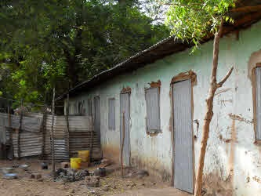
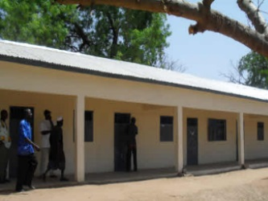
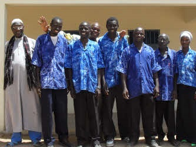
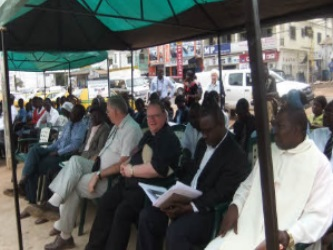
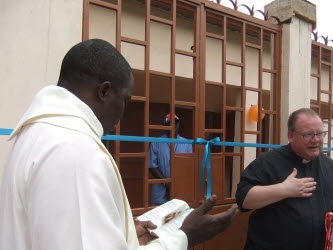
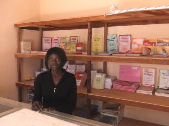
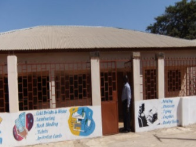
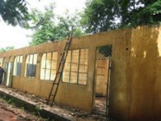
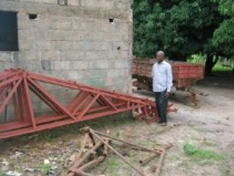
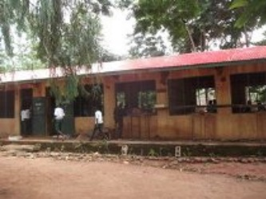
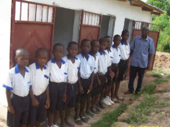
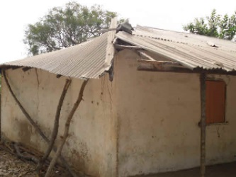
❮
❯